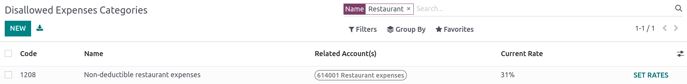
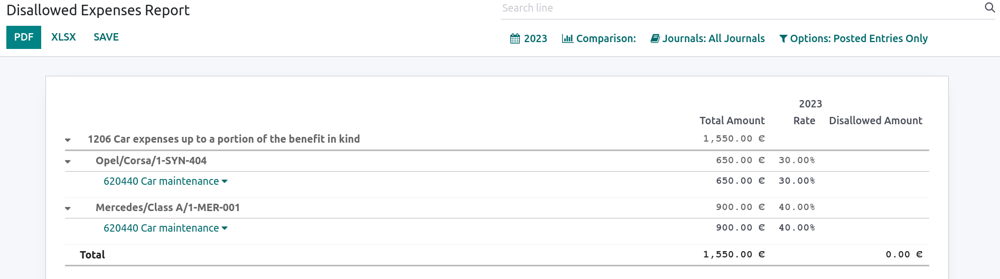

比利时¶
配置¶
安装 🇧🇪比利时 财政本地化套装，以获得比利时本地化的所有默认会计功能，并遵循 :abbr:`IFRS（国际财务报告标准）`规则。
科目表¶
您可以通过 。
比利时会计科目表包括在:abbr:PCMN（标准化最低会计科目表）`中描述的预设科目。要添加新账户，点击 :guilabel:`新建。出现一行新内容，填写后点击 保存，然后点击 设置，进一步配置。
参见
税¶
安装 比利时 - 会计 和 比利时 - 会计报告 模块后，会自动创建默认的比利时税种。每个税种都会影响比利时的 税务报告，可通过 ，来查看该报告。
在比利时，标准增值税率为**21%**，但某些类别的商品和服务适用较低税率。社会住房和餐厅提供的食品适用中间税率，为**12%**；而大部分基本商品，如食品、供水、书籍和药品适用较低税率，为**6%**。特殊商品和服务适用**0%**税率，例如某些日报、周报以及回收商品。
不可抵扣的税款¶
在比利时，有些税款是不能完全扣除的，例如汽车保养税。这意味着这些税款的一部分被视为支出。
在 Odoo 中，您可以通过为这些税项创建税务规则并将其链接到相应的账户，配置不可抵扣的税项。这样，系统就会自动计算税款并将其分配到相应的账户。
要配置新的不可扣税，请转到 ，然后点击 新建：
Add a line and select Base in the Based On column;
添加行，然后在:guilabel:
基于`栏中选择:guilabel:`税率，并在:guilabel:`%`栏中输入**不可扣除**百分比；On the of tax line, select the Tax Grid(s) related to your tax;
Add a line with the deductible percentage in the % column;
Set of tax in Based On;
Select 411000 VAT recoverable as account, and select the related tax grid.
创建不可抵扣税款后，可在编码账单和贷项通知时选择相应的税款，将其应用到交易中。系统会自动计算税额，并根据配置的税务规则将其分配到相应的账户。
Example
有了比利时本地化套装，默认收取**21% 汽车**税（50% 不可减免）。

报告¶
以下是可用的比利时特定报告清单：
资产负债表；
损益表；
税务报告；
合作伙伴增值税清单；
EC 销售明细行；
Intrastat.
点击**书本**图标，选择报告的比利时语版本，即可获取报告的比利时语版本：（BE）。

参见
Disallowed expenses report¶
Disallowed expenses are expenses that can be deducted from your accounting result but not from your fiscal result.
The disallowed expenses report is available by going to . It allows financial results in real-time, and periodic changes. This report is generated based on the disallowed expenses categories that you can reach by going to . Some categories already exist by default but do not have any rates. Click on Set Rates to update a specific category.
小技巧
You can add multiple rates for various dates. In that case, the rate used to calculate the expense depends on the date at which it is calculated, and the rate set for that date.
If you have the Fleet app installed, tick the Car Category box when applicable. This makes the vehicle mandatory while booking a vendor bill.
To link a disallowed expenses category with a specific account, go to . Find the account you want, and click on Setup. Add the Disallowed Expense category in the Disallowed Expenses field. From now, when an expense is created with this account, the disallowed expense is calculated based on the rate mentioned in the Disallowed Expense category.
Let’s take an example reflecting restaurant and car expenses.
Restaurant expenses¶
In Belgium, 31% of restaurant expenses are non-deductible. Create a new disallowed expenses category and set both Related Account(s) and Current Rate.
Car expenses: vehicle split¶
In Belgium, the deductible percentage varies from car to car and, therefore, should be indicated for each vehicle. To do so, open and select a vehicle. In the Tax info tab, go to the Disallowed Expenses Rate section and click on Add a line. Add a Start Date and a %. The amounts go in the same account for all car expenses.
When you create a bill for car expenses, you can link each expense to a specific car by filling the Vehicle column, so the right percentage is applied.

The vehicle split option available in the disallowed expenses report allows you to see the rate and disallowed amount for each car.
Fee form 281.50 and form 325¶
Fee form 281.50¶
Annually, a 281.50 fee form must be reported to the fiscal authorities. To do so, the tag
281.50 must be added on the contact form of the entities concerned by the 281.50 fee. To
add the tag, open , select the person or company you want to create a
281.50 fee form for, and add the 281.50 tag in the Tags field.

注解
Make sure the street, zip code, country, and VAT number are also informed on the Contact form.
Then, depending on the nature of the expense, add the corresponding 281.50 tag on the impact
accounts. To do so, go to , and click on Setup to add the corresponding 281.50 tag on the impacted
accounts, i.e., 281.50 - Commissions, depending on the nature of the expense.
Form 325¶
You can create a 325 form by going to . A new page pops up: select the right options and click Generate 325 form. To open an already generated 325 form, go to .

CODA and SODA statements¶
CODA¶
CODA is an electronic XML format used to import Belgian bank statements. You can download CODA files from your bank and import them directly into Odoo by clicking Import file from your Bank journal on your dashboard.

SODA¶
SODA is an electronic XML format used to import accounting entries related to salaries. SODA files can be imported into the journal you use to record salaries by going to your Accounting dashboard and clicking Upload in the related journal card form.
Once your SODA files are imported, the entries are created automatically in your salary journal.

CodaBox¶
CodaBox is a service that allows Belgian accounting firms to access their clients’ bank information and statements. Odoo provides a way to import such statements automatically.
注解
As an accounting firm, you must manage your clients on separate databases and configure them individually to avoid mixing up their data. The connection must be made by the accounting firm with valid CodaBox Connect credentials.
配置¶
The configuration must be done on each client database. In the following instructions, we will refer to your client’s company as Company and to your accounting firm as Accounting Firm.
You must first install CodaBox and CodaBox Bridge Wizard (if available) to start.
重要
Make sure the company settings are correctly configured, i.e., the country is set to Belgium, the Tax ID and Accounting Firm fields are filled, as well as the Tax ID of the Accounting Firm.
Configure the journals¶
Set the right IBAN in the Account Number field.
Select CodaBox synchronization as the Bank Feed.

小技巧
在处理使用不同货币的银行交易时，建议使用相同的银行账户和不同的货币创建多个日记账。
新建杂项日记账。
进入 ，然后转到 CodaBox 部分。
在 SODA 日记账字段中选择刚刚创建的日记账。

配置连接¶
进入 ，然后转到 CodaBox 部分。
点击 管理连接 打开连接向导，显示用于连接的 会计公司增值税 编号和 公司增值税 编号。
如果这是您的**首次连接**，请点击:guilabel:
创建连接。向导会确认连接已在**Odoo 端**创建。请按照步骤在 CodaBox 端验证连接。如果这**不是您的首次连接**，则将请求使用 Odoo 在首次连接时提供的 会计公司密码 来创建新连接。
注解
此 会计公司密码 专属于 Odoo，必须安全妥善保存。
现在，状态`应改为 :guilabel:`已连接。
同步¶
连接建立后，Odoo 就可以与 CodaBox 同步。
CODA 文件每 12 小时自动从 CodaBox 导入一次。您无需做任何操作。不过，如果您愿意，也可以通过点击会计仪表板中的:guilabel:`从 CodaBox`手动完成。
SODA 文件每天一次作为草稿从 CodaBox 自动导入。您无需做任何操作。不过，如果您愿意，也可以点击会计仪表板中的:guilabel:`从 CodaBox 获取`手动完成。
默认情况下，如果 SODA 文件中的账户未映射到 Odoo 中的账户，则使用暂记账户（499000），并在创建的日记账分录中添加备注。
注解
您可以进入 并点击 CodaBox 部分的 打开 SODA 映射 按钮，访问 SODA 和 Odoo 账户之间的映射。
潜在问题¶
CodaBox未配置。请检查您的配置。
未设置 公司增值税 或 会计公司增值税。
与这些会计公司和公司增值税号不存在任何联系。 请检查您的配置。
在检查连接状态时，如果 会计公司增值税 和 公司增值税 组合仍需注册，则可能发生这种情况。如果您在建立连接后更改了 公司增值税 就可能发生这种情况。出于安全原因，您必须为该 公司增值税 重建连接。
您的 CodaBox 连接似乎已失效。请重新连接。
如果您撤销了 Odoo 对您 CodaBox 账户的访问权限或仍需完成配置过程，就会出现这种情况。在这种情况下，您必须撤销连接并创建一个新连接。
所提供的密码对该会计公司无效。 您必须重复使用第一次连接时从 Odoo 收到的密码。
您提供的密码与第一次连接时从 Odoo 收到的密码不同。您必须使用第一次连接时从 Odoo 收到的密码为该会计公司创建新连接。如果您忘记密码，必须首先在 CodaBox（您的 myCodaBox 门户网站）上撤销 Odoo 连接。然后，您可以在 Odoo 端撤销连接，并 :ref:` 创建新 <belgium/codabox-configuration-connection>` 连接。
您提供的公司或会计公司增值税号似乎无效。 请检查您的配置。
无论是 公司增值税 还是 会计公司增值税 都不是有效的比利时格式。
您提供的会计公司增值税号在 CodaBox 中似乎不存在。 请检查您的配置。
您提供的 会计公司增值税 号码未在 CodaBox 中注册。您可能没有有效的 CodaBox 许可证链接到此增值税号。
似乎您已经创建了与该会计公司的 CodaBox 连接。 **要创建新连接，您必须首先在 myCodaBox 门户上撤销旧连接。
您必须进入您的 myCodaBox 门户，取消 Odoo 对您 CodaBox 账户的访问权限。然后，您可以 在 Odoo 端创建一个新连接 。
小技巧
要取消 Odoo 和 CodaBox 之间的连接，请进入 ，向下滚动到 CodaBox 部分，点击 管理连接，然后点击 撤销。
电子开票¶
Odoo 支持 Peppol BIS Billing 3.0（UBL） 电子发票格式。要为客户启用此功能，请进入 ，打开联系表单，并在 会计 选项卡下选择 Peppol BIS Billing 3.0 格式。
现金折扣¶
在比利时，如果发票上有提前付款折扣，则无论客户是否享受折扣，税款均按折扣后的总金额计算。
要应用正确的税额并在增值税申报表中正确报告，请将减税设置为 始终（开具发票时）。
参见
税务认证：餐厅 POS¶
在比利时，法律规定餐馆或餐车等烹饪业务的所有者，必须使用政府认证的**收银系统**来登记收据。如果他们的年收入（不包括增值税、饮料和外卖食品）超过 25,000 欧元，则必须使用该系统。
该政府认证系统需要使用:ref: 认证 POS 系统<belgium/certified-pos>、:ref: 财政数据模块<belgium/fdm>`（或**黑盒子**）和:ref: `增值税签名卡<belgium/vat>。
重要
请勿忘记在`联邦公共服务财政登记表 <https://www.systemedecaisseenregistreuse.be/fr/enregistrement>`_上登记为*食品服务行业经理*。
经过认证的 POS 系统¶
Odoo POS 系统已通过**Odoo Online** 和**Odoo.sh**上托管数据库主要版本的认证。请参考下表，确保您的 POS 系统已通过认证。
Odoo云端版本 |
Odoo.sh |
本地部署 |
|
|---|---|---|---|
Odoo 17.0 |
具有证明的 |
具有证明的 |
未认证 |
Odoo 16.0 |
具有证明的 |
具有证明的 |
未认证 |
Odoo 15.0 |
具有证明的 |
具有证明的 |
未认证 |
Odoo 14.0 |
具有证明的 |
具有证明的 |
未认证 |
参见
/administration/supported_versions
经认证的 POS 系统 <https://www.systemedecaisseenregistreuse.be/systemes-certifies>`_ 必须遵守严格的政府规定，这意味着它的操作方式与未经认证的 POS 不同。
在经过认证的 POS 上，您不能：
必须激活 现金舍入 功能，并设置 舍入精度 为
0,05，以及 舍入方法 为 小数取整。价格中必须包含税费。要进行设置，请进入 :menuselection:` POS –> 配置 –> 设置`，在 会计 部分，单击默认销售税字段旁边的箭头，打开 :guilabel:` 默认销售税` 表单。点击:guilabel:
高级选项，并启用:guilabel:包含在价格中。在 POS 会话开始时，用户必须点击 开始工作 打卡。这样才能登记 POS 订单。如果用户没有打卡，将无法进行 POS 订单。同样，用户必须在会话结束时点击 结束工作 进行打卡。
警告
If you configure a POS to work with a FDM, you cannot use it again without it.
Fiscal Data Module (FDM)¶
FDM 或**黑盒子**是一种经政府认证的设备，它与销售点应用程序一起工作，并保存您的 POS 订单信息。具体来说，每个 POS 订单都会生成一个**哈希**（:dfn: 唯一码），并添加到收据上。这样，政府就可以核实所有收入都已申报。
警告
Only the FDM from Boîtenoire.be with the FDM certificate number BMC04 is supported by Odoo. Contact the manufacturer (GCV BMC) to order one.
配置¶
Before setting up your database to work with an FDM, ensure you have the following hardware:
a Boîtenoire.be (certificate number BMC04) FDM;
an RS-232 serial null modem cable per FDM;
an RS-232 serial-to-USB adapter per FDM;
an IoT Box (one IoT box per FDM); and
票据打印机。
Black box module¶
As a pre-requisite, activate the Belgian Registered Cash Register module
(technical name: pos_blackbox_be).

激活模块后，将增值税号添加到公司信息中。要进行设置，请进入:menuselection:设置 --> 公司 --> 更新信息 并填写 VAT 字段。然后，为每位操作 POS 系统的工作人员输入一个国家注册号。要执行此操作，进入:guilabel:员工 应用程序并打开雇员表单。进入 ，填写 INSZ 或 BIS 编号 字段。

小技巧
要输入您的信息，请单击您的头像，进入 :menuselection:` 我的个人资料 –> 偏好选项卡` 并在指定字段中输入您的 INSZ 或 BIS 编号。
警告
您必须直接在生产数据库中配置 :abbr:`FDM （财政数据模块）’。在测试环境中使用可能会导致 FDM 中存储的数据不正确。
IoT 盒子¶
要使用 FDM（财政数据模块），您需要注册一个物联网盒子。如要注册，您必须通过我们的`支持联系表<https://www.odoo.com/help>`_与我们联系，并提供以下信息：
您的增值税号；
您公司的名称、地址和法律架构；以及
物联网盒子的 Mac 地址
Once your IoT box is certified, connect it to your database. To verify that the IoT Box recognizes the FDM, go to the IoT homepage and scroll down the IOT Device section, which should display the FDM.

Then, add the IoT to your POS. To do so, go to , select your POS, scroll down to the Connected Device section, and enable IoT Box. Lastly, add the FMD in the Fiscal Data Module field.
注解
To be able to use an FDM, you must at least connect one Receipt Printer.
VAT signing card¶
当您打开 POS 会话并进行首次交易时，系统会提示您输入随:abbr:VSC（增值税签账卡）`一起提供的 PIN 码。该卡由:abbr:`FPS（联邦公共财政局）`在 “注册”时提供。